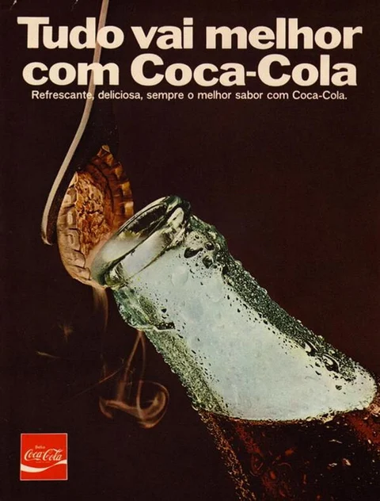

Anúncio publicitŕio

O anúncio publicitário se caracteriza e se estrutura baseado no conteúdo que deseja expressar, ou seja, a depender da mensagem decidida, elabora-se uma forma textual, com hibridismo de linguagem, capaz de chamar a atenção e convencer os consumidores a adquirirem o produto/serviço.
O anúncio publicitário é um gênero textual que tem a função de apresentar determinado
produto/marca para um amplo público, no intuito de atraí-lo a adquirir o objeto ofertado.
O anúncio publicitário se caracteriza e se estrutura baseado no conteúdo que deseja expressar
a intenção de venda de um serviço, bem ou produto
Linguagem dinâmica, coloquial, direta, simples e acessível
Recursos visuais, sonoros e interativos.
Intertextualidade (relação com outros textos) e humor.
Verbal traz, em geral, frases curtas e de efeito. É veiculado em meios nos quais o público se dedica à leitura, como jornais e revistas.
Não verbal é aquele que usa somente imagens
Misto como o nome sugere, o formato misto combina texto e imagens.
comercial, culturais, institucionais
comercial são aqueles que divugam sesu produtos
cultural são aqueles que alam obre a culturas
<11> comerial cultural
Defina a orientação da campanha Estude bastante o produto Conheça o seu público
Verbal: traz, em geral, frases curtas e de efeito. É veiculado em meios nos quais o público se dedica
a leitura, como jornais e revistas.
Não verbal: é aquele que usa somente imagens. Costuma ser usado em locais nos quais as pessoas
não têm tempo para ler textos, como em estações de metrô e outdoors.
Misto: como o nome sugere, o formato misto combina texto e imagens. Pode ser usado
em veículos mais tradicionais e também nas redes sociais.
como fazer um anuncio publicitario?
a ua ecrutura:
- 1. Saiba quem é sua audiência
Antes de mais nada, é preciso alcançar as pessoas certas.
Para isso, é necessário conhecer bem o seu público-alvo,
suas personas e seu perfil de cliente ideal.
- 2Faça benchmarking
Pesquise o que outros negócios do seu mercado de atuação estão
fazendo para entender o que funciona e o que não funciona em seu mercado
e, é claro, obter inspiração.
- 3Use técnicas de persuasão
É recomendado usar técnicas de persuasão durante toda a construção do anúncio.
Entre as mais conhecidas estão aquelas reunidas por Robert Cialdini
no livro As armas da persuasão. .
- 4. Revise o anúncio
Antes da publicação, revise seu anúncio, colocando-se no
lugar do seu público para garantir que a mensagem
realmente passa a ideia que você deseja transmitir.
Não hesite em fazer alterações caso necessário.
- 5. Monitore os resultados
mesmo que você tenha feito campanhas em meios mais tradicionais,
procure sempre entender se as ações estão trazendo retorno,
observando, por exemplo, o impacto nas vendas.
para finalizar fale um pouco obre o anúncio que vocễ produiu,por queeescolheu e como fez